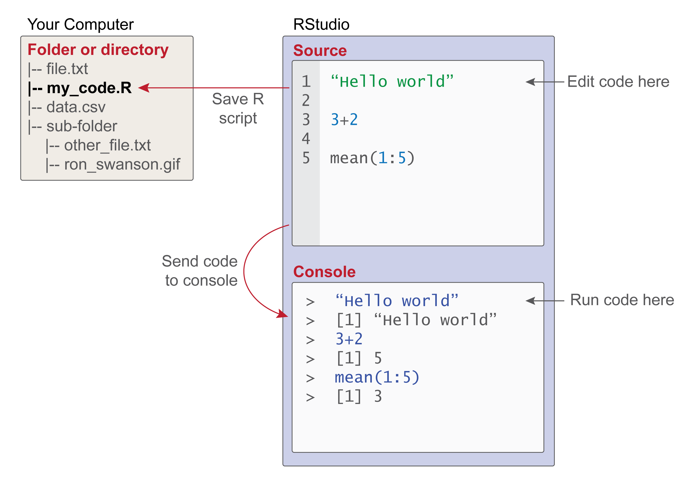
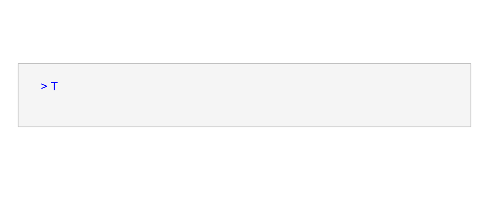

Chapter 6 R Basics

6.1 Overview
| Goal | To provide a brief overview of basic R functionality. |
| tl;dr | It’s not just a calculator. |
| Outcomes |
Here, you will learn about
|
| Datasets | NONE |
| Requirements | NONE |
| Further Reading |
An Introduction to R (R Core Team 2020a) R FAQ (Hornik 2020) |
6.2 A Glorified Calculator?
R has functionality for basic arithmetic operations, including
+addition,-subtraction,*multiplication,/division, and^exponentiation.
6.3 Objects and Functions
In R, you can make things and you can do things. The things that you make are called objects and the things that you do things with are called functions. The most common kind of R object is a vector. You can learn more about the different types of vectors in Chapter 6 Vector Types. Other kinds of objects include formula, raster, grob, hist, and density. What about functions? These are actually a special class of object that take other objects as input and typically (though not always) return other objects as output. They are thus “functions” in the sense of input-output devices. Any complex statistical operation you want to conduct in R will almost certainly involve the use of one or more functions.
6.3.1 Creating objects with assignment
How do you make an object in R? Well, you just…
It’s that simple! Or, maybe not. Let’s take a moment to unpack this black magic. First, we note that it is made-up of three things:
- a name, in this case,
bob; - an arrow,
<-, the essential ingredient in this incantation; and
- an object, specifically the number
5.137, which is being created.
The statement adds an object (5.137) to the R environment and then assigns that object to the name bob. This is why it is sometimes referred to as an assignment statement (R Core Team 2020a). It is not just creating an object, but assigning it to a name.
R has a few syntactic requirements for object names. They can only contain letters, numbers, underscores _, and periods . (or dots). And they cannot start with numbers.
# Good
winter_solder <- "Buckey"
object4 <- 23.2
# Bad
winter soldier <- "Buckey" # spaces not allowed
4object <- 23.2 # cannot start with a numberMy_naME and my_name the same.
But, why assign a name at all? Well, if we just typed
the resulting object would live a fleeting life, shorter than a fruit fly’s, being quickly created and just as quickly destroyed. But, when we give an object a name, we also give it some permanence, and can literally call it back whenever we like. We just say, “bob, come here!” but in the language of R:
or even just
And then R summons bob for us and tells us who bob is. bob is 5.137. Obviously!
Now, you may think, “I could just create 5.137 any time I wanted, let it die, and just create it again. It’s not that hard to type five characters, after all.” If you want to flirt with anarchy in this way, by all means, but let me offer two good reasons why you shouldn’t. First, it is certainly true that one number is not hard to type, but it is rare that you will need just one. Suppose you had an object consisting of ten thousand numbers, would you care to type that each time you needed it? For that matter, it would be nigh impossible to ensure you were typing the same numbers each time. Plus, when you make an object with a name, R has your back. If you type 6.137 instead of 5.137, for example, R will not protest, but if you type boo instead of bob, R will say, “nope.”
So, giving objects names in R is a good way to avoid errors.
6.3.2 Doing things with functions
To use a function, we call it just as we would any other object, by typing its name. Unlike simple objects, though, we must also take care to append closed parentheses () to the end of the function name. Within those parentheses, we can go on to supply arguments that control how the function behaves.
If you cast your mind back to the algebra you learned in high school, this syntax should be familiar to you. Consider this algebraic expression:
\[ f(x, y) = 2x + 3y \]
It has these syntactic properties:
- The name of this function is \(f\) (just as the name of the function above is seq).
- Its arguments (or parameters) include \(x\) and \(y\).
- These are surrounded by parentheses
(). - And, the object the function returns is the result of summing \(2*x\) and \(3*y\).
So, if you supply this function with the values 4 and 2 (as in, \(f(x=4, y=2)\)), it will return 14 as a result. R functions work in precisely the same way. In fact, we can demonstrate this now:
Notice that just as we did with regular object assignment above, we have created a function here and assigned it to a name, in this case, f. This shoud clue you into the fact that functions are objects, too, just a special sort of object that you can also do things with.
6.4 Vectorized Functions
Not all functions in R are vectorized, but many are, and they provide an invaluable tool for statistical programming. What is a vectorized function? In a nutshell, it’s a function \(f()\) that takes a vector c(x1, x2, x3, ..., xn) as input and returns the vector c(f(x1), f(x2), f(x3), ..., f(xn)) as output. Meaning, in other words, its an action that gets applied separately to each element of a set of values. A consequence, or requirement perhaps, is that the input and output vectors have the same length (or number of elements). To make this more concrete, consider this simple function add_one().
This function takes an input vector and adds one to each element in that vector. The result is an output vector of the same length, where each element has a value one greater than its corresponding element in the input vector.
When it comes to these vectorized functions, R on occasion exhibits some odd behavior. For instance, operations are applied pairwise when two vectors are applied.
Here, 1 is added to 4, 2 is added to 5, and 3 is added to 6. That seems simple enough. However, when the vectors have different lengths, then R chooses to reuse numbers from the shorter length vector, starting with the first. This is known as recycling. For example:
Here, 1 is added to 3, 2 is added to 4, then (recycling) 1 is added to 5, and 2 is added to 6. While this is not always ideal behavior, it does at least provide a standardized or rule-based means of ensuring that everything in the longer vector gets subjected to the vectorized function.
6.5 Console and Scripts
In this section, we’ll go over some basic considerations of where to write your R code and where to run it.

6.5.1 R Console
Perhaps this is obvious, but you can write R code basically anywhere - on a napkin at a restaurant, for instance, on your hand in a pinch, or even in a fever dream - but if you want to get your R code to actually run, you will have to send it to the R console, so it can be interpreted. In this sense, at least, the R console is like R’s central nervous system. Signals (your code) get sent to the console to get interpreted and generate some behavioral output (like a plot or a linear model). Here is what typing R code in the actual R console looks like:

Please note that in this book, the greater-than symbol > preceding R code is suppressed, and that the result is preceded by ##.
6.5.2 R Scripts
One important downside of writing R code directly into the console is that it is more like writing R in a dream than on a restaurant napkin. When you write code into it, you cannot get it back once you “wake up” from your R session.7 This means that working in the console subjects the reproducibility of your analysis to the sometimes (often?) unreliable testimony of your own memory - like trying to remember what happened in your dream. To overcome this limitation of the console, the authors of R have also provided a specially designed text file, called an R “script,” that you can write R code into and save to disc. A dead giveaway that you have one on your computer is the .R file extension.
Note, however, that even with R scripts, you cannot just open one in a text editor and expect the code it contains to run. You would be just as well off wadding up your napkin of code and hurling it defiantly at your monitor. No, to get your code to run, wherever it resides, you must always pass it to the console to get interpreted. There are a number of ways to do this, the most basic being these:
- Copy and paste the code from your script into the console. This strategy, of course, makes an R script only slightly more advantageous than a napkin…
- To run a single line of code, place the cursor on that line and hit
CTRL+Enteron PC orCMD+Enteron Mac. - To run multiple lines of code, highlight those lines and hit
CTRL+Enter(CMD+Enter).
6.6 Packages in the R Library
R is a highly extensible programming language. Being extensible is just a fancy way of saying that individuals can write R code (more often than not, this involves writing functions) that others can later incorporate into their own workflow. These functions can be shared as simple scripts, but they can also be bundled into packages, which you can think of as being sort of like an R “app.” The basic motivation for a package is to save you from having to recreate the wheel every time you open R. That is, it saves you from having to type the same code over and over again. It’s also a powerful tool for reproducibility, as it ensures that the exact same code is run each time.
To install a package, you use the install.packages() function.
This function simply adds the package to your R library, which is more or less just a folder on your computer. To actually use the functions provided by an R package, you have to “check out” the package from the library. The way to do this in R is with the library() function.
Once you have done this, the functions provided by the package are now available to use.
Some packages that I use in virtually all of my analyses include the following:
dplyr
|
A grammar of data manipulation, providing a consistent set of verbs that help you solve the most common data manipulation challenges. | LINK |
ggplot2
|
A system for declaratively creating graphics, based on The Grammar of Graphics. | LINK |
here
|
Enables easy file referencing in project-oriented workflows. | LINK |
sf
|
A package that provides simple feature access for R. | LINK |
References
Hornik, Kurt. 2020. “R Faq.” https://CRAN.R-project.org/doc/FAQ/R-FAQ.html.
R Core Team. 2020a. An Introduction to R.
This is not strictly true, as R provides .Rhistory files, but you have little control over the formatting of those documents.↩︎